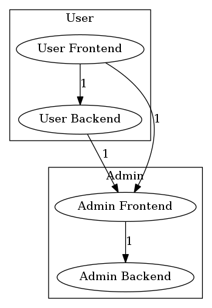

Depfile
The depfile describes your layers, ruleset and other project configuration.
imports section
If your depfile configuration becomes too large, you can split it up into
multiple files that can then be imported in the main depfile using the imports
section.
Example:
imports:
- some/depfile.yaml
Parameter section
analyser
count_use_statements
This feature is deprecated and will be removed in future release, use types instead.
By default, deptrac will analyse all occurrences for classes, including use
statements. If you would like to exempt use statements from the analysis, you
can change this behaviour in the depfile:
parameters:
analyser:
count_use_statements: false
types
Deptrac can have different parts of the php file as a source for the dependency. By default, only class definitions and use statements can be the source of the dependency and superglobal variable usage is not tracked. To analyse file more fully, you can define what types of DependencyEmmiters you want to apply on the analysed file:
parameters:
analyser:
types:
- use
- file
- class_superglobal
- function_superglobal
class(default) - analyses class definitions for everything apart from superglobal usage.class_superglobal- analyses class definitions for superglobal usage.use(default) - analyses file definitions for use statements.file- analyses file for everything apart from use statements and function/class definitions.function- analyses function definitions for everything apart from superglobal usage.function_superglobal- analyses function definitions for superglobal usage.
baseline
You can define a baseline, i.e. existing violations that should not fail a build. The baseline option takes the filename where the baseline is defined.
Example:
parameters:
baseline: 'deptrac.baseline.yaml'
exclude_files
With exclude_files you can specify a list of regular expressions for excluding
certain files in your path. If any part of the file path matches a regexp
defined here, than it will not be collected and added to your layers.
Example:
parameters:
exclude_files:
- '#.*Test\.php$#'
formatters
Some formatters can be configured to change their output for different purposes. For more info on formatters see Formatters.
graphviz
You can configure the graphviz output by hiding layers from the output or by grouping them.
groups
You can group multiple layers.
Example:
parameters:
layers:
- User Frontend
- User Backend
- Admin Frontend
- Admin Backend
formatters:
graphviz:
groups:
User:
- User Frontend
- User Backend
Admin:
- Admin Frontend
- Admin Backend
The resulting output will look like this:

hidden_layers
You can hide layers from the generated output. These layers will still be analysed and violations will be reported, but they might no longer be visible in the generated image.
Example:
parameters:
formatters:
graphviz:
hidden_layers:
- Controller
ignore_uncovered_internal_classes
By default, PHP internal classes will not be reported as uncovered, if they are not covered by a layer. If you want to change this behavior, you can set this option to false.
Example:
parameters:
ignore_uncovered_internal_classes: false
layers
For more details on layers see the Concepts documentation.
Example:
parameters:
layers:
-
name: Controller
collectors:
-
type: className
regex: .*Controller.*
name
Each layer must have a unique name. You can use special characters, e.g. () in
your names. The YAML format sometimes tries to convert certain characters into
types, so you might want to make sure that they are interpreted as string by
enclosing the whole name in single quotes, e.g. 'Controller'.
collectors
For a list of available collectors and their configuration format see Collectors.
paths
The path option takes a list of directories, that Deptrac should analyse. In
most cases, this is where your project's source files are located. You could
also add the vendor/ directory if you want to collect any vendor files in layers
as well.
Example:
parameters:
paths:
- src/
- vendor/
ruleset
A ruleset is a list of layer names, which again take a list of layer names.
Example:
parameters:
ruleset:
Controller:
- Service
Service:
- Repository
Repository: ~
Allowing transitive dependencies
If you prepend a layer with + then not only this layer is allowed, but also
all layers it allows. In the example below, the Controller can now use classes
from the Service and the Repository layer, not just the Service layer.
parameters:
ruleset:
Controller:
- +Service
Service:
- Repository
Repository: ~
skip_violations
With skip_violations you can tell your CI pipeline to not fail, when the
listed violations are encountered. For more on this see
Concepts.
Example:
parameters:
skip_violations:
Library\LibClass:
- Core\CoreClass
use_relative_path_from_depfile
By default, all paths in the configuration are assumed to be relative to the depfile they are defined in. If you want to change this behavior set this option to false.
Example:
parameters:
use_relative_path_from_depfile: false
Parameters
Deptrac provides parameters that can be user in your configuration.
%currentWorkingDirectory%The path Deptrac runs in%depfileDirectory%The path where the depfile is stored.
You can specify your own parameters and reuse them in your configuration:
Example:
parameters:
Project: MyProject
layers:
-
name: Foo
collectors:
-
type: implements
implements: '%Project%\SomeInterface'